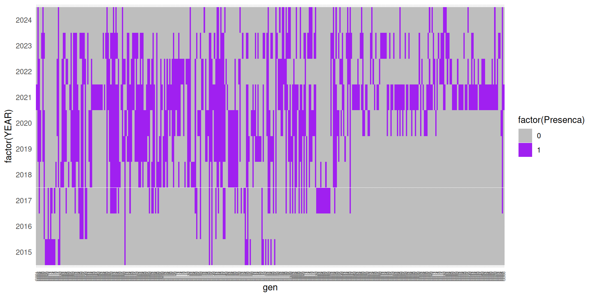
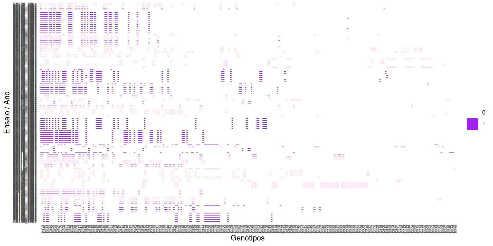
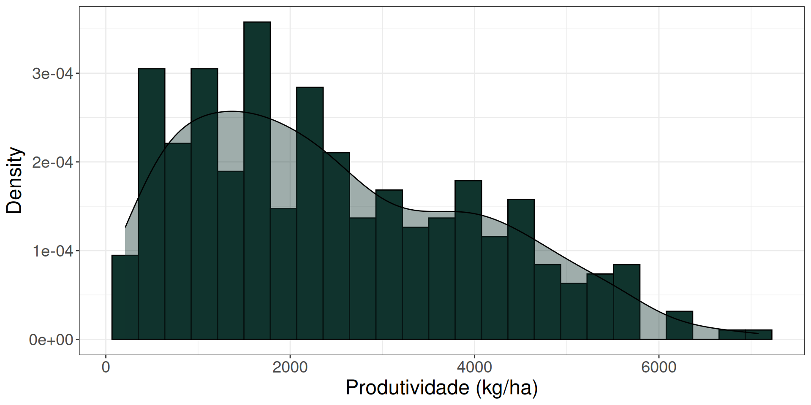
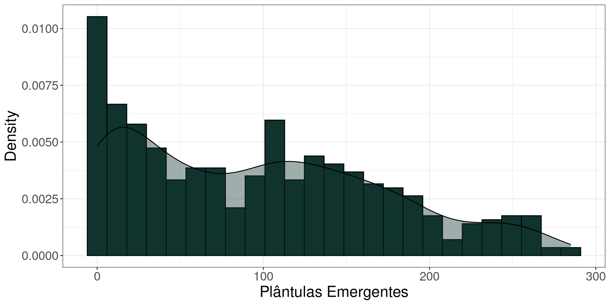
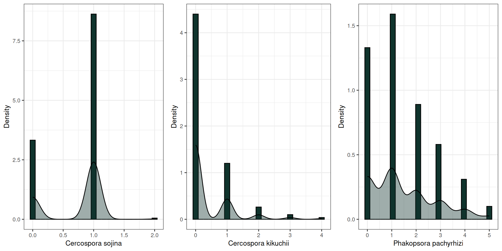
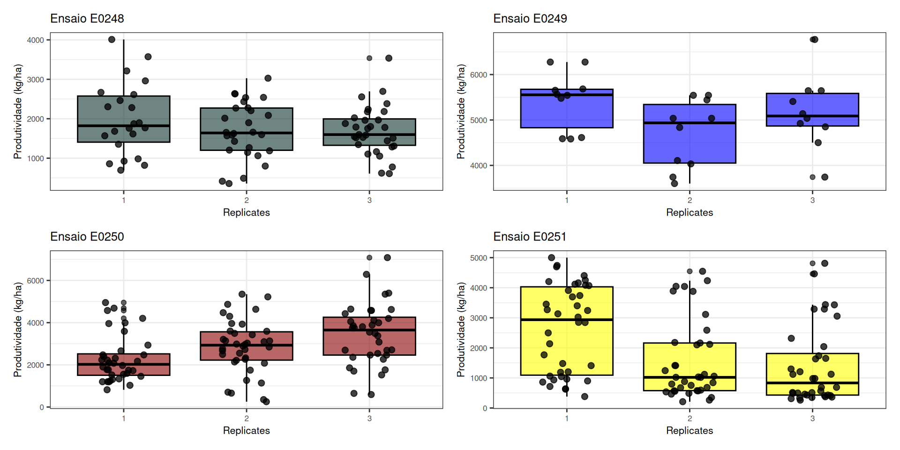
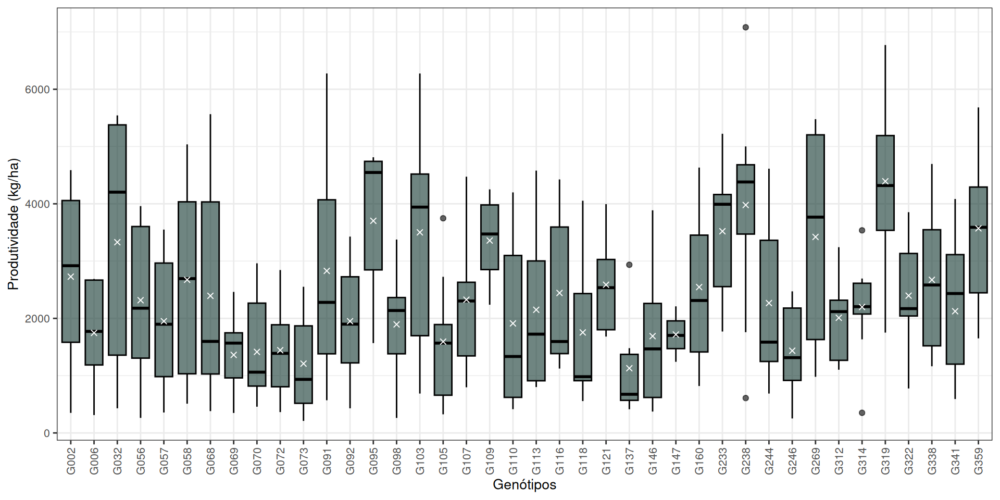
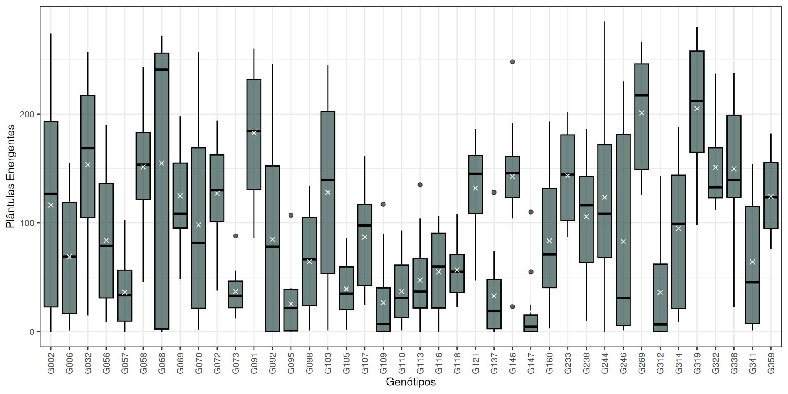
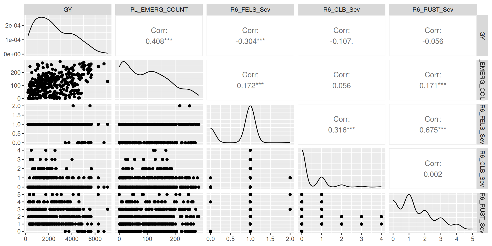

Grupo 3: Juliana Oliveira, Vitoria Murakami, Pedro H. de Araujo
Graduate Program in Genetics and Plant Breeding, Department of Genetics, ESALQ-USP
Using the dataset you will use in the project, perform a comprehensive exploratory data analysis. Choose four trials and perform EDA for five traits (if available). Check the variation, detect outliers and possible errors, build histograms, density plots and boxplots; compute measures of central tendency and dispersion, and investigate the relationship between traits. Finally, perform an across trials EDA: check if there is any major changes within traits across trials.
1) Seleção dos Ensaios e Características Avaliadas
Os dados a seguir são resultantes de ensaios que foram conduzidos com genótipos de soja no país Malawi (África), provenientes dos Ensaios Pan-Africanos (PATs), coordenados pelo Laboratório de Inovação em Soja (SIL) (Araújo et al., 2025).
De acordo com o gráfico abaixo, foram selecionados os anos de 2021 a 2024 para a realização das análises e escolha dos ensaios. Essa seleção foi baseada no fato de serem os anos mais recentes disponíveis, além de ainda incluírem genótipos que já vinham sendo avaliados em anos anteriores, conforme relatado no gráfico a seguir.
Code
#importing packageslibrary(ggplot2)library(dplyr)library(tidyr)datsub$gen <-factor(datsub$gen, levels =unique(datsub$gen)) # fator ordenadodados_completo <- df %>%distinct(gen, YEAR) %>%# garante 1 linha por combinaçãomutate(Presenca =1) %>%# tudo que existe = presençacomplete(gen, YEAR, fill =list(Presenca =0)) # cria ausênciasdados_completo$Presenca <-factor(dados_completo$Presenca) # transformar em fator para usar no ggplotggplot(data = dados_completo, aes(x = gen, y =factor(YEAR), fill =factor(Presenca))) +geom_tile() +scale_fill_manual(values =c("0"="gray", "1"="purple")) +theme_minimal() +theme(axis.text.x =element_text(angle =90, size =5, vjust =0.5, hjust =1) )

Code
#cleaning the enviromentrm(dados_completo)
Em seguida, foram analisados os ensaios dentro de cada um dos quatro anos selecionados.
Code
dados_plot <- df %>%filter(YEAR %in%c(2021, 2022, 2023, 2024)) %>%# filtrar anodistinct(gen, env, YEAR) %>%mutate(Presenca =1) %>%complete(gen, env, YEAR, fill =list(Presenca =0))dados_plot <- dados_plot %>%mutate(env_year =paste(env, YEAR, sep ="_")) # crir eixo x e y combinando, enxemplo ANO_ENSAIOdados_plot <- dados_plot %>%arrange(env, YEAR) # ordenar primeiro ensaio e depois anos, para verificarmos o conjunto de ensaios de cada ano e se algum se repetedados_plot$env_year <-factor( dados_plot$env_year,levels =unique(dados_plot$env_year)) dados_plot <- dados_plot %>%group_by(gen) %>%mutate(freq =sum(Presenca)) %>%ungroup() %>%arrange(desc(freq)) # ordenar genótipos por frequência, mais fácil de visualizar, se não vira um "formigueiro"dados_plot$gen <-factor(dados_plot$gen, levels =unique(dados_plot$gen)) # transformar genótipos em fator e ordenarggplot(dados_plot, aes(x = gen, y = env_year, fill =factor(Presenca))) +geom_tile() +scale_fill_manual(values =c("0"="white", "1"="purple")) +theme_minimal() +theme(axis.text.x =element_text(angle =90, size =5),axis.text.y =element_text(size =6),panel.grid =element_blank() ) +labs(x ="Genótipos",y ="Ensaio / Ano",fill ="" )

Code
rm(dados_plot)
Observando o gráfico acima, foram selecionados os quatro ensaios conduzidos em 2022 (E0248, E0249, E0250 e E0251), pois todos avaliam os mesmos genótipos, o que facilita a comparação e a análise exploratória descritiva proposta neste relatório inicial.
A partir disso, foram escolhidas cinco características que estavam disponíveis em todos esses ensaios. Para essa verificação, optou-se pela utilização de uma tabela de presença (1) e ausência (0).
Assim, as características avaliadas selecionadas para análise descritiva foram:
Produtividade de grãos (GY, kg/ha): rendimento da cultura, sendo a principal variável de interesse agronômico;
Contagem de Plântulas Emergentes (PL_EMERG_COUNT): relacionada ao percentual de germinação e estabelecimento da cultura no campo;
Severidade de Cercospora sojina (R6_FELS_Sev): indicador do nível de infecção da doença conhecida como mancha olho-de-rã.
Severidade de Cercospora kikuchii (R6_CLB_Sev): indicador do nível de infecção da doença que causa crestamento foliar e mancha púrpura nas sementes.
Severidade de Phakopsora pachyrhizi (R6_RUST_Sev): indicador do nível de infecção da doença conhecida como ferrugem asiática.
Obs. Foram selecionadas três patógenos que causam doenças foliares a fim de avaliar a correlação entre suas severidade.
2) Exploratory Data Analysis (EDA)
2.1) EDA geral das variáveis analisadas
2.1.1) Produtividade de grãos (GY, kg/ha)
Code
dat_sub =subset(df, env %in%c("E0248", "E0249", "E0250", "E0251"))# operador %in% verifica se cada valor de uma coluna pertence a um conjunto de valores.ggplot(dat_sub, aes(x = GY)) +geom_histogram(bins =25, color ='black', fill="#10342d",aes(y=after_stat(density))) +geom_density(fill ="#10342d", alpha = .4, color ="black")+theme_bw() +theme(text =element_text(size =18)) +labs(y ="Density", x ="Produtividade (kg/ha)")

Para os ensaios analisados, há uma maior concentração de produtividade entre, aproximadamente, 1000 e 3000 kg/ha. A presença de alguns valores acima de 5000 kg/ha “puxam” a cauda da distribuição, permitindo observar uma distribuição assimétrica a direit. Essa situação pode indicar ambientes (ensaios) muito favoráveis, genótipos com alta capacidade produtiva ou, como vai ser discutido futuramente, possíveis outliers.
2.1.2) Contagem de Plântulas Emergentes (PL_EMERG_COUNT)
Code
ggplot(data = dat_sub, aes(x = PL_EMERG_COUNT)) +geom_histogram(bins =25, color ='black', fill="#10342d",aes(y=after_stat(density))) +geom_density(fill ="#10342d", alpha = .4, color ="black")+theme_bw() +theme(text =element_text(size =18)) +labs(y ="Density", x ="Plântulas Emergentes")

As parcelas dos experimentos consistiam em quatro fileiras de cinco metros de comprimento, com espaçamento de 50 cm entre plantas, com aproximadamente 20 plantas por fileira, ou seja, 80 plantas por parcela (Araújo et al., 2025). Contudo, como há 3 repetições de cada tratamento, teoricamente, haveria um total de 240 plântulas / tratamento / ensaio.
Assim, observando o gráfico acima, percebe-se uma grande concentração de valores baixos de plântulas emergentes, principalmente entre 0 à 100 plântulas (menos da metade da quantidade semeada), indicando falhas de germinação/estabelecimento dos genótipos. Em contrapartida, acentuando a assimetria da distribuição dos dados, há ocorrências de valores maiores de 240 plântulas, que podem estar associados à falhas na semeadura, como sobreposição de sementes, ou ainda erros na contabilização do estande inicial.
2.1.3) Doenças foliares
Severidade de Cercospora sojina (R6_FELS_Sev): indicador do nível de infecção da doença conhecida como mancha olho-de-rã.
Severidade de Cercospora kikuchii (R6_CLB_Sev): indicador do nível de infecção da doença que causa crestamento foliar e mancha púrpura nas sementes.
Severidade de Phakopsora pachyrhizi (R6_RUST_Sev): indicador do nível de infecção da doença conhecida como ferrugem asiática.
Code
library(gridExtra)a =ggplot(data = dat_sub, aes(x = R6_FELS_Sev)) +geom_histogram(bins =25, color ='black', fill="#10342d",aes(y=after_stat(density))) +geom_density(fill ="#10342d", alpha = .4, color ="black")+theme_bw() +theme(text =element_text(size =10)) +labs(y ="Density", x ="Cercospora sojina")b =ggplot(data = dat_sub, aes(x = R6_CLB_Sev)) +geom_histogram(bins =25, color ='black', fill="#10342d",aes(y=after_stat(density))) +geom_density(fill ="#10342d", alpha = .4, color ="black")+theme_bw() +theme(text =element_text(size =10)) +labs(y ="Density", x ="Cercospora kikuchii")c =ggplot(data = dat_sub, aes(x = R6_RUST_Sev)) +geom_histogram(bins =25, color ='black', fill="#10342d",aes(y=after_stat(density))) +geom_density(fill ="#10342d", alpha = .4, color ="black")+theme_bw() +theme(text =element_text(size =10)) +labs(y ="Density", x ="Phakopsora pachyrhizi")require(gridExtra)grid.arrange(a, b, c, ncol =3)

As análises de severidade de doenças foram avaliadas no estádio R6 e categorizadas de 1 (pouco afetada) a 5 (muito afetada). Observou-se menor severidade de ocorrência do patógeno Cercospora sojina, seguida de Cercospora kikuchii, sendo que nenhuma delas alcançou a nota máxima de severidade, com poucas ocorrências de valores acima de 3 para a segunda, respectivamente, indicando baixa incidência dessas doenças. Contudo, para Phakopsora pachyrhizi, observa-se maior dispersão dos dados, com distribuição mais ampla ao longo da escala, embora ainda com predominância de valores baixos a intermediários, indicando a presença de genótipos promissores quanto à tolerância a essa doença ou a ocorrência de ensaios sob baixa pressão do patógeno.
2.2) EDA para repetições
Para observar a presença de valores destoantes entre as repetições (outliers), optamos por avaliar as repetições dentro de cada ensaio para a característica produtividade, visto que ocorreram em ambientes diferentes, como mostra nos gráficos a seguir.
Code
# ensaio dat_0248dat_E0248 =subset(df, env =="E0248")dat_E0249 =subset(df, env =="E0249")dat_E0250 =subset(df, env =="E0250")dat_E0251 =subset(df, env =="E0251")dat_sub =subset(df, env %in%c("E0248", "E0249", "E0250", "E0251"))# operador %in% verifica se cada valor de uma coluna pertence a um conjunto de valores.d =ggplot(data = dat_E0248, aes(x =as.factor(rep), y = GY)) +geom_boxplot(fill ="#10342d", color ="black", alpha = .6) +geom_jitter(width = .2, size =2, alpha = .75, color ="black") +theme_bw() +theme(text =element_text(size =8)) +labs(x ="Replicates", y ="Produtividade (kg/ha)", title ="Ensaio E0248")# ensaio dat_0249e =ggplot(data = dat_E0249, aes(x =as.factor(rep), y = GY)) +geom_boxplot(fill ="blue", color ="black", alpha = .6) +geom_jitter(width = .2, size =2, alpha = .75, color ="black") +theme_bw() +theme(text =element_text(size =8)) +labs(x ="Replicates", y ="Produtividade (kg/ha)", title ="Ensaio E0249")# ensaio dat_0250f =ggplot(data = dat_E0250, aes(x =as.factor(rep), y = GY)) +geom_boxplot(fill ="darkred", color ="black", alpha = .6) +geom_jitter(width = .2, size =2, alpha = .75, color ="black") +theme_bw() +theme(text =element_text(size =8)) +labs(x ="Replicates", y ="Produtividade (kg/ha)", title ="Ensaio E0250")# ensaio dat_0251g =ggplot(data = dat_E0251, aes(x =as.factor(rep), y = GY)) +geom_boxplot(fill ="yellow", color ="black", alpha = .6) +geom_jitter(width = .2, size =2, alpha = .75, color ="black") +theme_bw() +theme(text =element_text(size =8)) +labs(x ="Replicates", y ="Produtividade (kg/ha)", title ="Ensaio E0251")library(patchwork)(d + e) / (f + g)

Todos os ensaios apresentaram variação na produtividade entre repetições, indicando influência dos ambientes. O E0249 destacou-se pelos maiores valores de produtividade e menor dispersão, variando principalmente entre 4000 kg/ha à 600 kg/ha, indicando maior estabilidade produtiva, enquanto o E0248 apresentou produtividade intermediária, porém com maior variabilidade entre parcelas. No E0250, observou-se uma diferença significativa entre as repetições, com incremento de produtividade para a produtividade dos genótipos da repetição 1 para a 3, sugerindo efeito de posicionamento no campo. O ensaio E0251 foi o que apresentou maior heterogeneidade dentro e entre as repetições, indicando menor uniformidade experimental até mesmo dentro dos blocos. Os outliers identificados na terceira repetição dos ensaios E0249, E0250 e E0251 podem ter provocado a assimetria da distribuição do gráfico geral de produtividade apresentado no tópico 2.1.1, sendo recomendado identificar quais são esses genótipos e se eles mantém o rendimento nos ensaios e repetições.
2.3) EDA para os genótipos
2.3.1) Produtividade de grãos (GY, kg/ha)
Code
ggplot(data = dat_sub, aes(x =as.factor(gen), y = GY)) +geom_boxplot(fill ="#10342d", color ="black", alpha = .6) +stat_summary(fun ="mean", geom ="point", shape =4, color ="white") +theme_bw() +theme(text =element_text(size =10), axis.text.x =element_text(angle =90, vjust = .5, hjust =1)) +labs(x ="Genótipos", y ="Produtividade (kg/ha)")

Analisando os dados de produtividade, através do gráfico, em geral, grande dispersões pronunciadas, excetuando-se G147, 137, G314, e assimetria entre quartis para a maioria dos genótipos. A amplitude variou à depender do material, de pequena à bastante pronunciada como no caso do G91. Além disso é possível indentificar possíveis outliers, que poderiam estar deslocando a média, o G238 apresentou uma leitura acima da marca dos 7.000kg/ha, o qual provavelmente valha a pena investigar futuramente
2.3.2) Contagem de Plântulas Emergentes (PL_EMERG_COUNT)
Code
ggplot(data = dat_sub, aes(x =as.factor(gen), y = PL_EMERG_COUNT)) +geom_boxplot(fill ="#10342d", color ="black", alpha = .6) +stat_summary(fun ="mean", geom ="point", shape =4, color ="white") +theme_bw() +theme(text =element_text(size =10), axis.text.x =element_text(angle =90, vjust = .5, hjust =1)) +labs(x ="Genótipos", y ="Plântulas Energentes")

O gráfico de contagem de plântulas emergentes apresentou comporttamento semelhandte ao de produtividade, com alguns outliers identificados em alguns genótipos, médias proximas as medianas, e amplitude prounciada em alguns materiais, nota-se uma grande dispersão na esmagadora maioria dos genótipos, indicando que futuramente pode ser fortúito uma análise das variáveis relacionadas ao componente ambiental. Um genotipo que chamou atenção foi o G068 pela proporção do quartil inferior em relação ao superior, de maneira que é de se esperar que talvez não obtenhamos uma distribuição normal dos dados para esse caractere.
2.3.3) Doenças foliares
Code
gg1 =ggplot(data = dat_sub, aes(x =as.factor(gen), y = R6_FELS_Sev)) +geom_bar(fill ="#10342d", color ="black", alpha = .6, stat ="identity") +theme_bw() +theme(text =element_text(size =10), axis.text.x =element_text(angle =90, vjust = .5, hjust =1)) +labs(x ="Genótipos", y ="Cercospora sojina")gg2 =ggplot(data = dat_sub, aes(x =as.factor(gen), y = R6_CLB_Sev)) +geom_boxplot(fill ="#10342d", color ="black", alpha = .6) +theme_bw() +theme(text =element_text(size =10), axis.text.x =element_text(angle =90, vjust = .5, hjust =1)) +labs(x ="Genótipos", y ="Cercospora kikuchii")gg3 =ggplot(data = dat_sub, aes(x =as.factor(gen), y = R6_RUST_Sev)) +geom_bar(fill ="#10342d", color ="black", alpha = .6, stat ="identity") +theme_bw() +theme(text =element_text(size =10), axis.text.x =element_text(angle =90, vjust = .5, hjust =1)) +labs(x ="Genótipos", y ="Phakopsora pachyrhizi")gg1 + gg2 + gg3
Através do dotplot, podemos notar a representatividade
2.6) Relação entre as características avaliadas
Code
vars <-c("GY", "PL_EMERG_COUNT", "R6_FELS_Sev", "R6_CLB_Sev", "R6_RUST_Sev")GGally::ggpairs(dat_sub, vars)

A análise da matriz de correlação demonstra correlação moderada e positiva entre severidade de Cercospora kikuchii x severidade de Phakopsora pachyrhizi; severidade de Cercospora Sojina x severidade Cercospora kikuchii; Contagem de emergência de plântulas x Produtividade de Grãos. Correlação moderada e negativa entre Severidade de Phakopsora pachyrhizix produtividade de grãos. Correlação fraca entre Severidade de Phakopsora pachyrhizi x Emergência de plantulas, e entre Severidade de Cercospora kikuchii x Emergência de Plantas; as demais correlações foram nulas/despresíveis.